Marve AfoProduct designer
Turning a Junk Drawer Into a Design System
T.L.D.R.
Rebuilt VML's global LMS from a nav-less 'junk drawer' into a coded, design system.
- Drove 89% org-wide adoption
- 316% more learning time
- 230% more active users
Role
Sole product and visual designer
on a six-person learning team, reporting to the Global VP of Learning.
Key Stakeholders
- VP, Global Head of Learning
- Global Director of HR Technology
- Regional Learning Directors
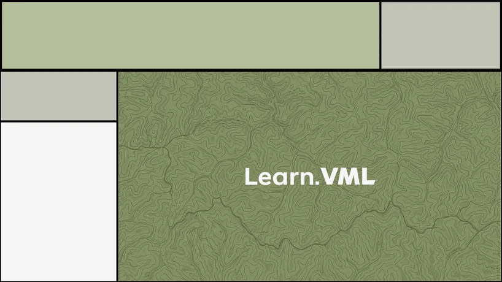
Before
Original home page
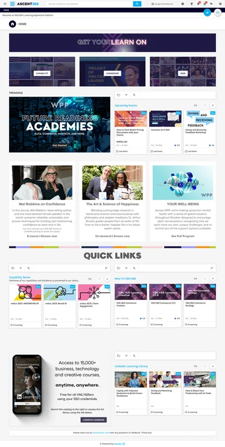
After
Revised home page
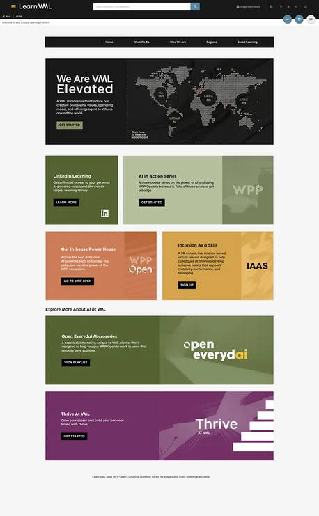
A Closer Look
Revised home page with highlighted callouts
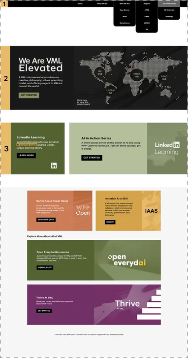
What Changed
Same Page,
New System
1) Real navigationA coded nav bar replaced links buried inside links.
2) New heroA customizable coded hero spotlights one initiative instead of competing banners.
3) Real textHeadlines and descriptions are live text, so search can find them.
Fewer cardsOrganized content rows replaced dozens of scattered tiles.
One block systemEvery section uses the same component library, so pages stay consistent.
Branded throughoutVML colors, textures, and the custom font run site-wide.
Clear CTAsOne consistent button style across every section.
The Problem
Leadership Called It A Junk Drawer
UnorganizedVML's learning platform had no main navigation, just links buried inside links. Leadership called it a junk drawer. For a creative agency that sells branded experiences, a platform that looked like an afterthought undercut the very learning it asked employees to take seriously.
Then VMLY&R merged with Wunderman Thompson to become VML. That meant two legacy LMSs, a new brand kit, and new leadership, all needed one platform to teach employees who the new company was.
- Audit
- Systemize
- Brand
- Customize
UX Audit
An Audit Highlighted 3 Failures
Before redesigning anything, I ran a heuristic audit, clicking through the platform as a new employee would and annotating screenshots wherever the experience broke down.
It was hard to find pagesThere was no main navigation, search was easy to miss and laid out backwards. Many courses were buried in links inside links. There was not a clear info hierarchy.
The interface didn't explain itselfIcons were misleading (the "add content" icon looked like an email reply), labels were vague ("Share this view?"), and there were two filter buttons doing one job.
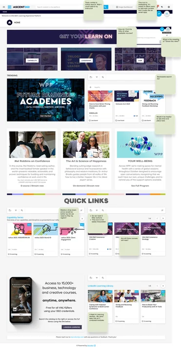
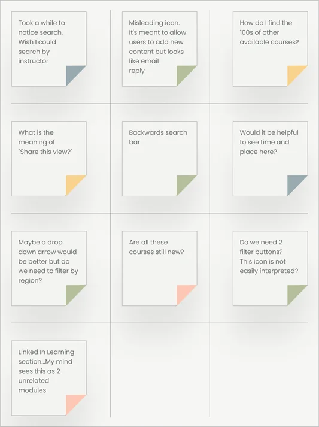
The Constraints
4 Blocks,
No Nav,
No Custom
Fonts.
Limited customizationThis needed real information architecture, not a new coat of style. Docebo locked us into fixed content blocks, with no native navigation and no way to load our own fonts. Whatever we built had to work inside those walls.
Drawing Board
I Fixed Structure Before Style
With the audit done, I facilitated a session introducing learning directors from four global regions to FigJam, so we could share and compare sitemap needs in one place. I then helped each region build lo-fi mockups of their own LMS pages.
Hi @Marve Afo, links 2 and 3 will be merged into 1 link when learn.vml is officially launched. We are planning to upload recordings into the course itself.
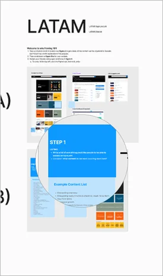
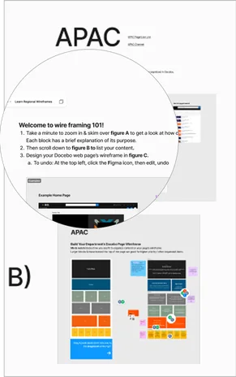
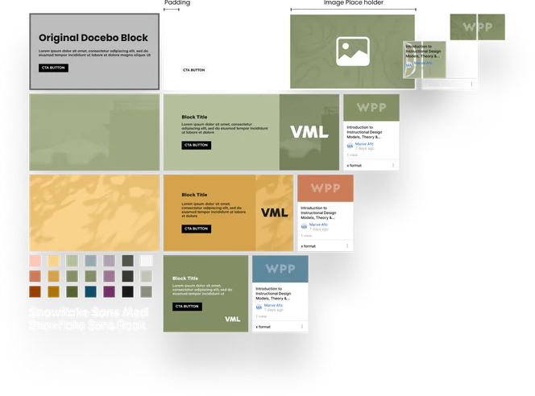
I Turned Limits
Into a System
I reverse engineered Docebo's content blocks in Figma, measuring the real thing so anything I built translated exactly when shipped. I systemized the four block sizes into a lego-like component library with swap-in textures and swatches from the new VML brand kit, built all 14 core pages for the post-merger relaunch, enabling fast, consistent mockups for easy sharing and approval.
Again and Again
I did many iterations of branding and design before reaching the current product.
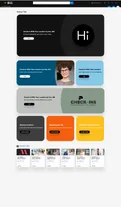
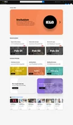
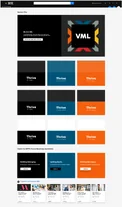
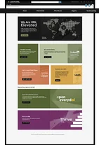
Readable Text Made Learning Findable
The old platform rendered most of its text as images. That meant no search, and no screen reader support. I rebuilt everything as real, readable text. Not a stylistic choice. A functional one.
Fewer Cards Made Pages Faster
Certain key pages were trying to load up to fifty content cards at once. It wasn't just cluttered, it was slow. I restructured all main pages into one hero block, a handful of organized content block rows, and a single channel feed at the bottom. Fixed the mess and the load time in the same move.
Governance Made the System Last
Good design can't fix active misuse on its own. The team built tagging rules with regional leads owning them; I built the training that made it stick, teaching teams exactly how to organize what they uploaded so better tagging meant content actually got found.
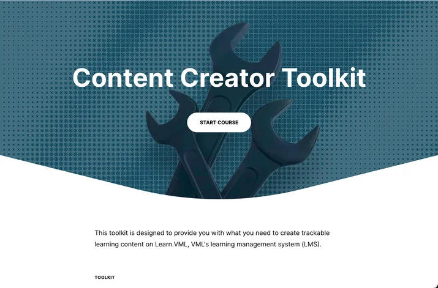
1 Block for Mobile
I redesigned every page for mobile using a single block: the smallest of Docebo's four sizes. It fit the screen perfectly, so stacking it gave every page a clean, consistent layout that kept the branding and hierarchy intact.
The Brand Couldn’t Look Like Training
It had to make people want to click. I started in black and white to avoid color bias, testing textures from paper to foundational bricks. With VML's VP, Global Head of Learning, we landed on elevation: growth, told through map topography and VML's full color palette.
Customization
Where the LMS Stopped, I Coded
Docebo had no navigation bar or flexible hero section, so I coded both in HTML. The new hero held video, leaderboards, larger images, and longer copy, allowing room to promote initiatives like our Brandon Hall Award–winning Microlearning Challenge that brought nearly 12K visits in three months, triple the usual monthly traffic.
I pulled CSS selectors in dev tools to fix spacing platform-wide with my own code, and embedded VML's custom font via base64, giving every page the brand voice the platform’s limits once constrained.
<!-- NAVIGATION --> <div id="nav-container"> <nav id="nav-bar"> <ul> <li><a href="/pages/126/gu-home">Home</a></li> <li><a href="/pages/129/what-we-do">What We Do</a></li> <li> <a>Who We Are</a> <ul class="dropdown-list"> <li><a class="sub-item" href="https://learn.vml.com/pages/173/your-career-thrive-oct-2024">Your Career</a></li>
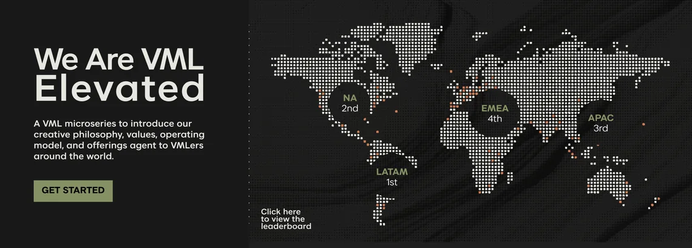
89% Showed Up.
Then They Stayed.
Stats reflect the first 10 months after launch.
89%
of employees logged in at least once
316%
increase in average learning time per user versus the old platform
230%
increase in unique monthly users compared to both legacy platforms combined
+431
additional courses created by regional teams, all inside the system
431 Courses Later, No Junk Drawer
What I'd Do DifferentlyI'd go back and properly name, tag, and organize my Figma layers after every big push. I spent this project teaching teams that good tagging is what makes content findable. My own files deserved the same rule. Clean layers would have made every later project, from branding new learning initiatives to new LMS pages, faster to build from.
2+ Years InRevamping the LMS was my first major project at VML. It's since been at the heart of 10+ awards for the learning team, including Brandon Hall and even Docebo itself. The real test of a design system isn't launch day. It's whether it holds when other people start building. So far, so good.